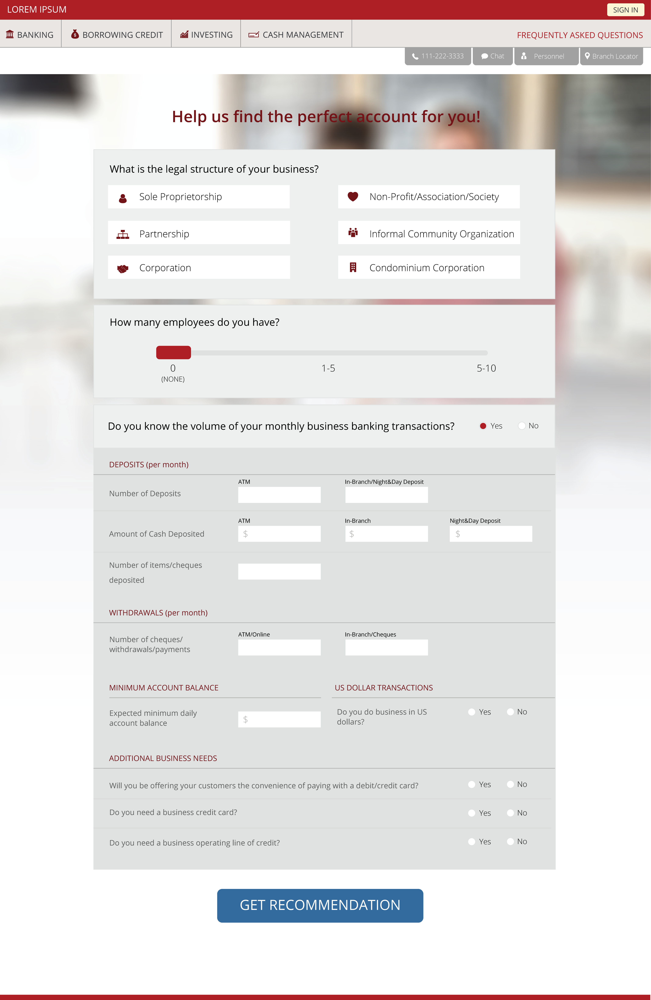

Canadian Imperial Commerce Bank
This project was a part of a larger business redesign of the business account opening of the Canadian Imperial Bank of Commerce. Capco was hoping to help CIBC shift their account opening online, and used the small business account opening for the proposal. As the sole desinger on the project, I was responsible for research, internal testing, wireframing, prototyping and visual design.
Technical Requirements
This project was used as a proof-of-concept for moving account opening online. It required an in-depth understanding of the bank's legal and financial processes, and possible features or products included in the ideal account opening process.

Market Research
Since CIBC didn't have any corporate online account opening processes, there were no standard practices available to use as a foundation of these designs. Therefore I used a combination of the CIBC personal banking site and the online account opening of other financial institutions to understand the industry standard.
Due to the limited time frame, the research focused mainly on Canadian banks so that the final design would have the correct process.
User Flow
Based on the industry research, I created a simple flow that involved the standard entrypoint, features, and necessary information for online account opening. This flow included additional upsells and product recommendations to showcase the potential beneficial opportunities online account opening could provide.
Microsite Landing Page
Wireframe & User Testing
Using low fidelity mocks, I conducted some simple, iterative, user tests as a sanity check for the process I developed. These tests revealed that the major pain point of the
illustrations
The icons below are meant to illustrate the different lines of credit available to small business owners. While I cannot elaborate on which account relates to which icon, I can share that it was a design problem in itself attmepting to represent each account with an illustration.


Testing
During the user testing, it was determined that the largest drop-off area for the business analysis tool was the form completion. Thus, the design was focused on being simple and interactive; using sliders and buttons rather than input fields. Information that does not pertain to the user was hidden on page load, and reavealed based on previous inputs.
It must be mobile
Like all great modern web experiences, this site was adaptively designed to be accessible on mobile. The most difficult part of this phase was translating all forms to the smaller screen-size. The mobile form was designed to reduce keyboard typing, and focus on gathering input using single thumb actions such as buttons, sliders and, where necessary, a number pad.